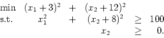
- (a)
- (3 points.) Is the feasible region for this problem convex?
- (b)
- (4 points.) Show that the gradients of the active constraints are linearly independent at any feasible point.
- (c)
- (3 points.) What are the Karush-Kuhn-Tucker conditions for this problem?
- (d)
- (3 points.) Verify that the points (6,0) and (-6,0) satisfy the KKT conditions.
- (e)
- (4 points.) Show that there are no points which satisfy x12+(x2+8)2>100 and also satisfy the KKT conditions.
- (f)
- (4 points.) Are there any other points which satisfy the KKT conditions?
- (g)
- (4 points.) Can you find the global minimizer?
- (a)
- (10 points.)
Let
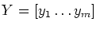
be an n x m matrix,
so yi is the ith column of Y.
Let 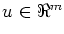
with
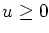
and
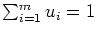.
The matrix Y and the vector u are given.
Show that x=Yu solves
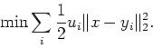
- (b)
- (10 points.)
Suppose you have an algorithm for minimizing a convex quadratic
function subject to linear constraints.
How could you solve the problem
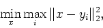
where 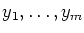 are distinct given points in 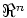? (Note: a quadratic function has the form f(w)=wTQw+cTw+d, where Q is a matrix, c is a vector, and d is a scalar.)
Consider the nonlinear programming problem
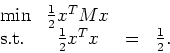
(P)
Assume M is (n x n) and symmetric. Let the eigenvalues of M be 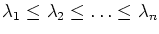. Assume 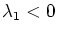 and 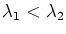. We saw in Homework 4 that the optimal solutions to this problem are the eigenvectors with eigenvalue 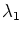 and norm 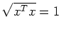. (Recall:
- (a)
- What is the Lagrangian dual function 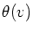 for this problem? (Take 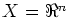.)
- (b)
- Solve the Lagrangian dual problem.
- (c)
- Let solve the Lagrangian dual problem. Let 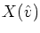 be the set of points in X which achieve the infimum in the definition of . Show that contains infinitely many points and that one of them solves the primal problem.
- (a)
- (10 points.) Consider the two sets of points
A={a1,...,ak} and
B={b1,...,bm} in .
Show that the two sets of points can be strictly separated if
and only if there exists a vector 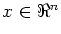
and a
scalar
satisfying
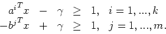
(Here, by strictly separate, I mean that the separating hyperplane does not contain any points in either A or B.) - (b)
- (10 points.) The problem in part 4a is a linear programming feasibility problem with variables x and . It can be stated as an optimization problem if we use the objective function 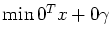, which is zero for any feasible solution. What is the dual of this linear program? If the dual problem has a feasible nonzero solution, what does that imply about the primal problem given in part 4a? Can you give a geometric meaning for a nonzero solution to the dual problem?
- (a)
- (8 points.) Show that the first order necessary conditions for 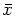
to be a local minimizer of f over
 are
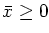,
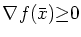,
and
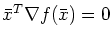.
(Note:
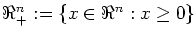.)
are
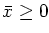,
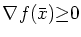,
and
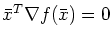.
(Note:
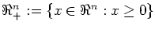.)
- (b)
- (6 points.) Let 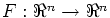 be strictly monotone. (A function G is strictly monotone if 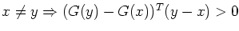.) Show that F has at most one zero (an with 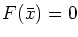) and that the nonlinear complementarity problem (find with 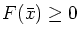 and 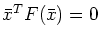) has at most one solution.
- (c)
- (6 points.)
Using the results of parts 5a and 5b,
show that, if f is strictly convex, it has at
most one minimizer over
and at
most one minimizer over .
(Hint: We know that f is strictly convex if
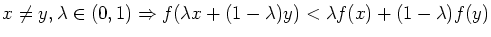.
You may assume that
f is strictly convex if and only if
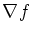
is strictly monotone.)